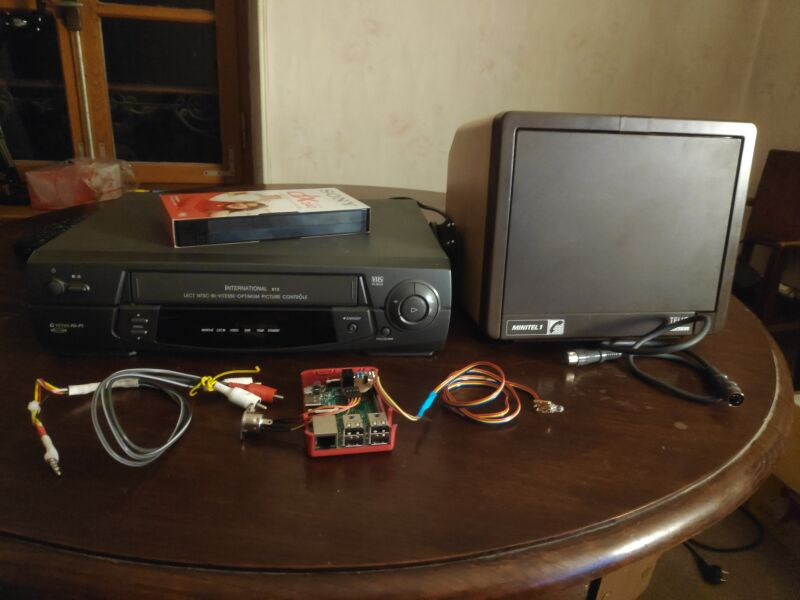

3615-YouTube
In this webcomic, French author Boulet describes an uchronic world where technology is stuck with French 70s/80s aesthetics. One of the panels shows a Minitel being used to download videos and record them on VHS tapes. I found this idea really neat, so I made a real life version that works with YouTube videos. The source code for this project is available on GitHub.
At startup, the user is greeted with a home screen and an input field where they can enter a search query. Pressing return makes the Minitel displays the top search results, allowing the user to select a video, and automatically downloads and records it on a VHS tape.
How it works
 The system consists of a Minitel 1B, a Raspberry Pi 3, a VCR, and a few custom-made cables and circuits to make every device talk to each other.
The interface
The system is based around a Raspberry Pi which does all the actual work. It uses a custom made level shifter to adapt the voltage levels between the Pi and the Minitel.
With this setup, we can send data to the Minitel and display some text on-screen. And since the connection is bidirectional, it can also be used to detect key presses.
For the graphics, I wrote a script that uses the Minitel's graphical character set to convert an image file into a string of bytes. Changing the foreground and background colors allows us to draw images using eight shades of gray.
Recording the video
Along with sending things to print on screen, the Python script running on the Raspberry Pi also does the following:
- Read the query typed by the user
- Search for the videos and download them.
- Start the video playback and control the VCR
The third step is not as straightforward as the first two. Since the VCR only deals with analog inputs, I had to use the Pi’s composite video output. This required a 4-pole jack to RCA adapter, which I built by splicing together a cheap headset and an audio cable.
This allows me to send a video signal simply by playing the video in VLC. I decided to emulate the VCR’s remote using LIRC. I whipped up a simple IR transmitter using the schematics from this guide and taped it on the VCR.
This simple solution worked perfectly. I might use this little transmitter for other projects involving IR communication.
Conclusion
As you might expect, the video quality is not really on par with today’s standards. But this project is less about being practical, and more about making something that seems to come from an alternate timeline, which I think it does.
Also, although this is not my first Minitel project it was my first time designing an actual user interface for it. The resulting code is not very elegant, albeit functional. Eventually, I would like to come back and turn it into a reusable Python module, but this is out of the scope of this project.
All in all, I am very happy with the result. I wanted to make this since I first read Boulet’s comic (which is more than a decade ago), and I am glad I finally took the time to bring it to life.